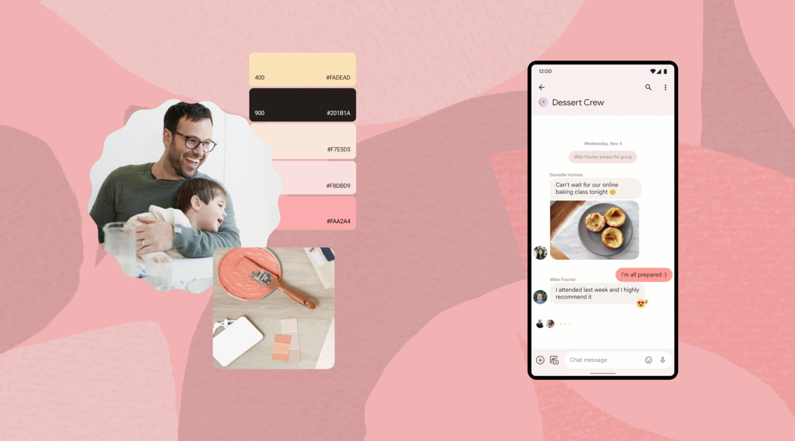
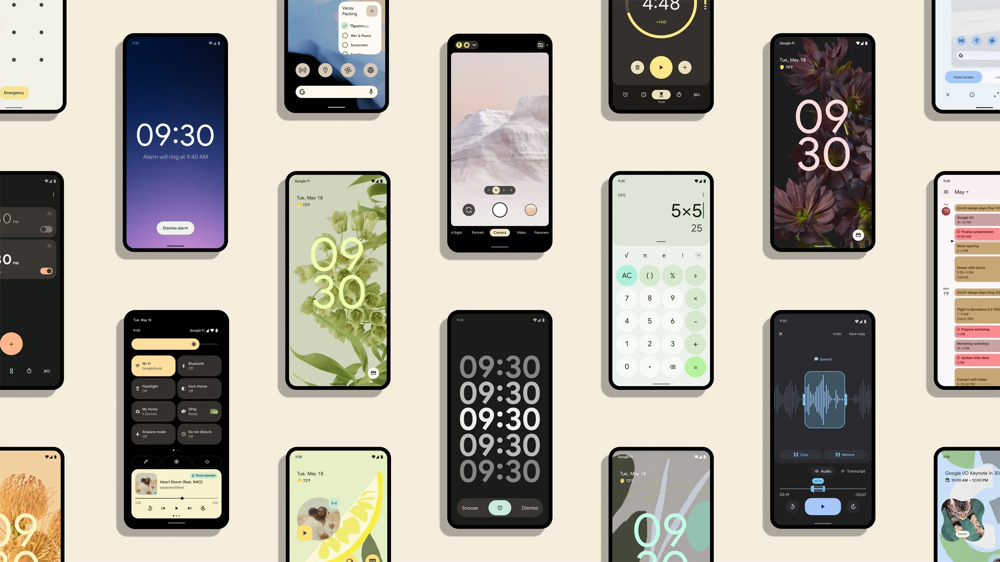
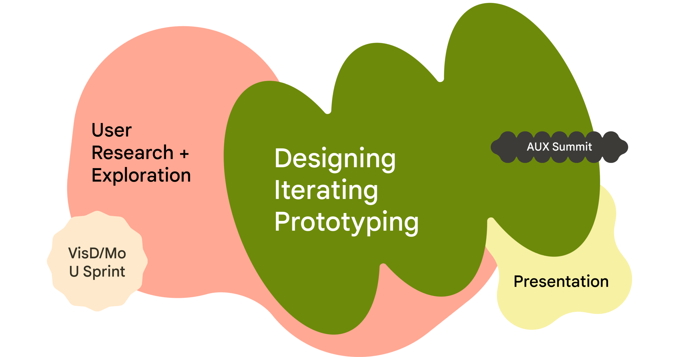
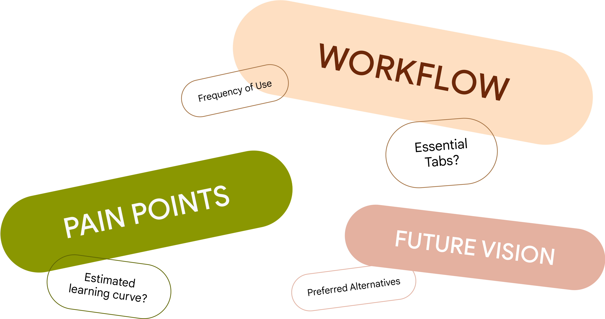
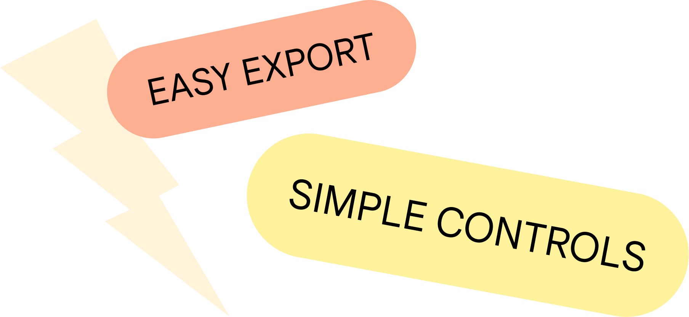
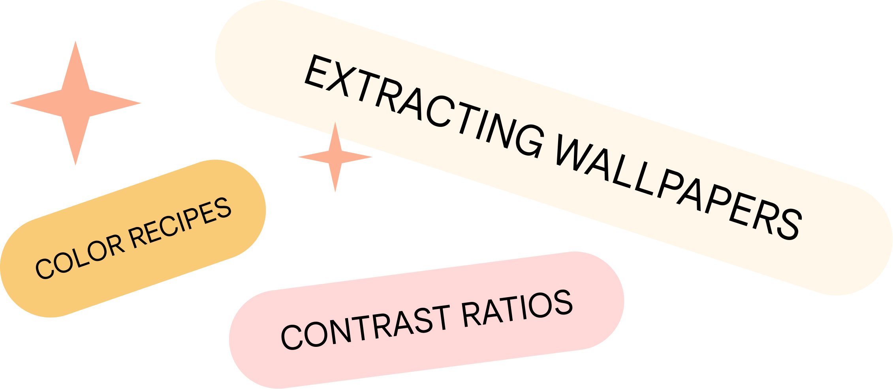
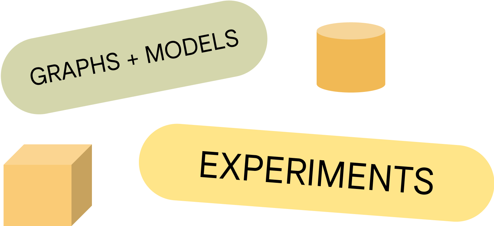

Internship / UI/UX Design
DURATION: May 2022 - August 2022
TEAM: Android Color
HOST(S): Matt Adams, Ashley Park
This past summer, I was tasked with completely redesigning an Monet Studio, an internal tool focused on allowing designers to understand, experience, and utilize dynamic color as a part of the Material You system. The internship involved conducting internal user research with designers across Android and Material before completely restructuring and redesigning the original Monet to accomodate its diverse user base.
Methods
Semi-structured Interviews
Affinity Diagramming
Personas
Wireframing
User Testing
Prototyping
Tools
Figma
Adobe Photoshop
Adobe AfterEffects
Google Suite
The Android Color Team at Google is responsible for working on the dynamic color system associated with Android / Pixel devices. In the past year or so, Android released Material You, a groundbreaking feature on Android devices where colors are extracted from the user's wallpaper and used to formulate different custom color schemes for the user interface. My team plays a critical role in the development of this feature and the internal tool I redesigned is essential in crafting these color mappings.


Internship Flow
This was the overall flow of my internship. My primary project involved multiple stages of research and design that bleeded into each other as well as contributing to a design sprint for the next Android and an overarching Android UX summit. In addition, towards the end of my internship, I hosted a design jam for Android designers across international timezones to facilitate color pairing exploration (more below on this). At the end of my internship, I presented my entire redesign and process to designers, engineers, and product managers all across Android.
User Research + Insights
After learning about Android's unique color space as well as conducting my own exploration into Monet, I began the user research stage. I started by making an interview guide focused on determining the pain points currently associated with Monet, the most prioritized tools and workflow of designers within Monet, and the vision that designers on Android have for a future iteration of Monet.

I interviewed a variety of designers, including those on Color, who were very familiar with Monet, as well as some designers in the greater Android Visual Design core who had more limited experience with Monet. I also met with the engineer that originally built Monet weekly to update him on my progress and gain an understanding of Monet from his perspective as an engineer, as well as to understand implementation feasibilities once I started designing.
After each interview, I took extensive notes and started to affinity diagram them into findings.
Monet’s UI was both inconsistent and unclear for a lot of designers. Given that a lot of Monet’s tools were built ad hoc at the request of designers on Color, it was more important at the time that the tool be built in time, even if that meant sacrificing most of the UX in the process.
There are many personas associated with Monet, each with their own needs and goals.
There is an underlying lack of information hierarchy, with over 20 tools all given the same weight based on the navigation. The interviews revealed that only 3-4 of tools are used daily, 5 or so used every so often, and the remaining built for a specific time and now inactive.
There is a desire for a new side to Monet-- one focused on color inspiration
Monet’s UI was both inconsistent and unclear for a lot of designers. Given that a lot of Monet’s tools were built ad hoc at the request of designers on Color, it was more important at the time that the tool be built in time, even if that meant sacrificing most of the UX in the process.
There are many personas associated with Monet, each with their own needs and goals.
There is an underlying lack of information hierarchy, with over 20 tools all given the same weight based on the navigation. The interviews revealed that only 3-4 of tools are used daily, 5 or so used every so often, and the remaining built for a specific time and now inactive.
There is a desire for a new side to Monet-- one focused on color inspiration
Personas
As mentioned above, my interviews revealed many varying personas associated with Monet. I noticed that while designers on Color specifically needed some of the advanced controls available in Monet, many of the designers on Android outside of color just needed the ability to quickly extract a wallpaper,

The Exporter
Likely a designer outside of Android Color, this user doesn’t want to get lost in the weeds – they want an easy way to experience dynamic color and generate assets without feeling overwhelmed by a ton of options or controls.

The Chef
Likely a designer within Android Color, the Chef uses Monet to convert hex to HCT, to cook up color recipes, check contrast ratios, and extract wallpapers. They value Monet’s finer controls but would appreciate a more streamlined and focused interface.
